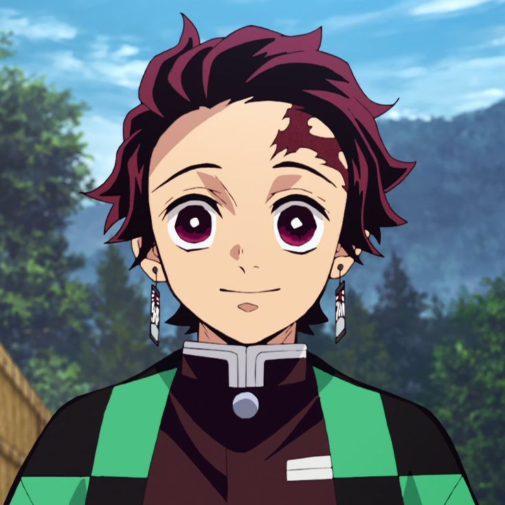

Tanjiro Kamado
Tanjiro Kamado is a kind teenage boy who lived in the mountains with his family, and took on the responsibilities of his father after his death. One day, after going into town and spending the night at a neighbor's house, he finds that his family has been killed and his younger sister, Nezuko, has become a demon. With the help of Giyuu Tomioka (the Water Hashira), he trains under Sakonji Urokodaki for two years before he takes the exam to become a Demon Slayer of the Demon Slayer Corps. He passes, and with the help of friends and fellow Demon Slayers, he strives to find a cure for Nezuko.